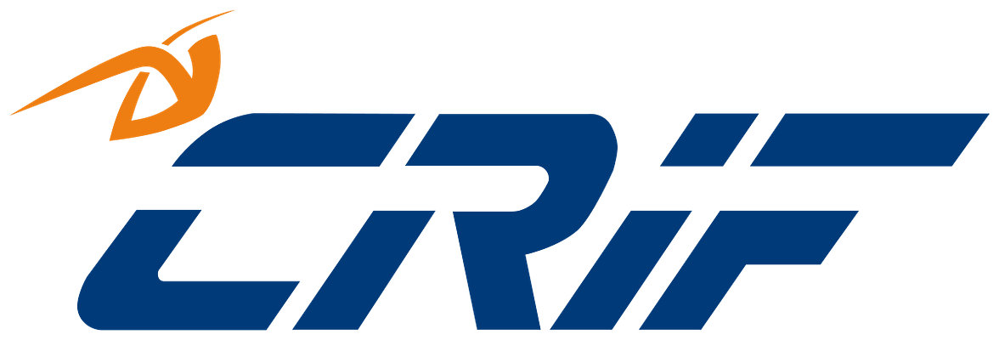
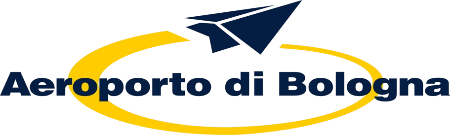
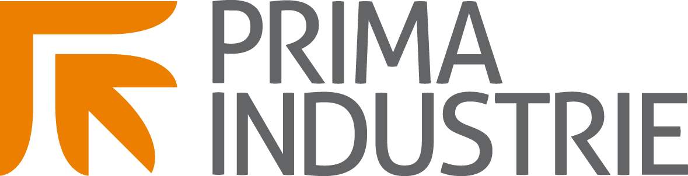
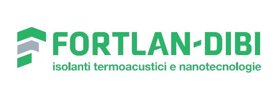
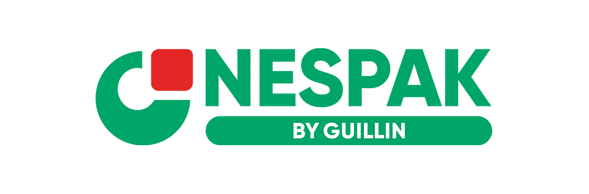
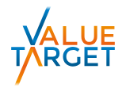
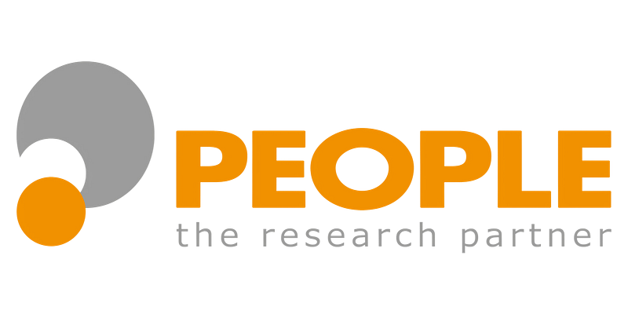
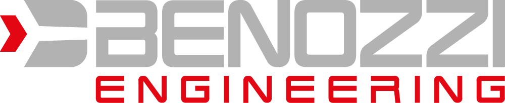
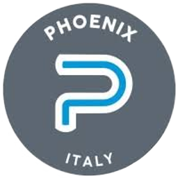
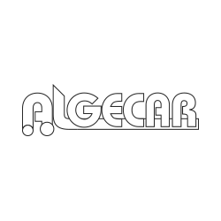

Chiarezza
Rifiutiamo la complessità fine a se stessa. Progettiamo l’accesso ai dati e all’AI partendo dall’operatività quotidiana delle aziende, consegnando interfacce e strumenti che le persone sanno governare da subito, senza frizioni.
Sviluppiamo ecosistemi digitali e soluzioni software avanzate. Affianchiamo le aziende con architetture robuste e interfacce studiate per ottimizzare ogni interazione.











Rifiutiamo la complessità fine a se stessa. Progettiamo l’accesso ai dati e all’AI partendo dall’operatività quotidiana delle aziende, consegnando interfacce e strumenti che le persone sanno governare da subito, senza frizioni.
Una soluzione crea valore solo se abbatte i tempi e migliora i risultati. Non ci limitiamo al rilascio del software: curiamo l’onboarding e l’integrazione tecnica affinché l’adozione sul campo sia rapida e definitiva.
L’innovazione non deve avere barriere all’ingresso. Abbattiamo i costi e la complessità dell’integrazione AI per permettere anche alle strutture più agili di competere ad armi pari, estraendo valore reale dai propri dati.
Mappiamo i tuoi flussi di lavoro e identifichiamo i veri colli di bottiglia operativi insieme a chi usa i sistemi ogni giorno. Definiamo il perimetro tecnico e stabiliamo le metriche di successo prima di scrivere una sola riga di codice.
Riduciamo il rischio tecnologico mettendo subito qualcosa di tangibile nelle mani del team. Sviluppiamo prototipi interattivi per testare l’esperienza d’uso, validare le logiche e aggiustare il tiro sui feedback reali.
Il nuovo software non crea silos, ma si innesta nella tua infrastruttura. Integriamo ERP, CRM e database esistenti per far fluire le informazioni in modo sicuro, rendendo i dati operativi esattamente dove servono.
Il codice in produzione è solo il primo traguardo. Affianchiamo i team nell’onboarding per garantire che il software diventi lo standard operativo. Le sfide ingegneristiche risolte scalano nel nostro ecosistema interno, migliorando i progetti e i prodotti futuri.
Tante aziende grandi e piccole si affidano già a noi per le proprie soluzioni tecnologiche. Ci scelgono perché crediamo che la tecnologia venga sempre dopo un’esigenza di business. Ecco cosa dicono:

AI generativa nei flussi di email del recupero crediti.

Processi amministrativi e CRM, integrati con la piattaforma di prenotazione già in uso.

Un software su misura per pratiche, scadenze e attività dello studio.

Finanza agevolata: dati, AI e un algoritmo per rendicontare le ore sui bandi.
Team indipendenti con totale responsabilità sul prodotto. Valutiamo le tecnologie sul campo, senza dogmi: adottiamo framework e architetture solo se portano un vantaggio tecnico e misurabile al progetto.
Trasformiamo le sfide dei singoli in standard di sviluppo. Attraverso feedback continui e revisioni incrociate, uniamo prospettive diverse per prendere decisioni tecniche migliori, più in fretta.
Il valore del software nasce sempre da una solida progettualità di base. Utilizziamo l’intelligenza artificiale non per delegare il pensiero, ma per scalare l’esecuzione: automatizziamo la routine per concentrare la materia grigia sull’architettura e sulla direzione del prodotto.
Il nostro R&D non si ferma ai progetti esterni. Sviluppiamo soluzioni proprietarie, come Helia, incubando internamente tecnologie avanzate e nuovi modelli di business per risolvere problemi reali sul mercato.
Sviluppiamo software su misura e soluzioni basate su dati, intelligenza artificiale e automazione. Affianchiamo le aziende dalla comprensione del problema al prototipo, fino all’integrazione e all’evoluzione della soluzione.
Significa mettere la tecnologia nelle condizioni di essere capita, adottata e utilizzata da quante più persone possibile in azienda. Il nostro lavoro comprende anche l’affiancamento di chi userà la soluzione ogni giorno.
L’integrazione è una parte centrale del nostro approccio. Partiamo dai sistemi e dai dati già presenti, ne valutiamo insieme possibilità e vincoli e progettiamo come collegarli alla nuova soluzione.
Da una conversazione sul tuo modo di lavorare: cosa vuoi migliorare, chi è coinvolto e quali obiettivi vuoi raggiungere. Da lì definiamo insieme un percorso concreto.
Raccontaci quale attività vuoi migliorare, chi è coinvolto e quali strumenti usate. Da qui definiamo il primo passo.
Parliamoci